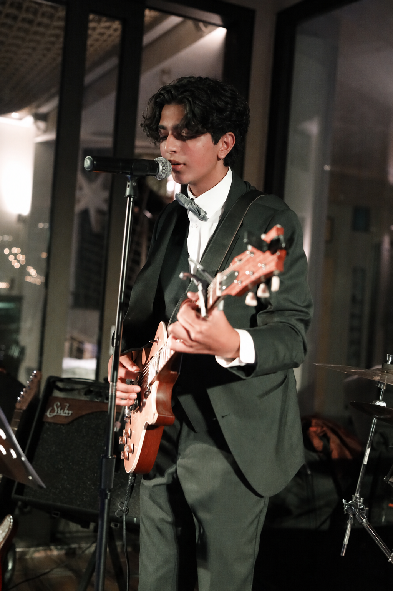

Things I build · Woodworking + electronics
A single-cut electric, built and wired by hand — from raw body and neck to a playable instrument.

Playing the finished build live.
A single-cut electric built from a Warmoth flame-maple-capped mahogany body and a rosewood-board neck. I took it from raw parts to a finished, playable instrument.
It's the guitar I play now.